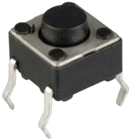
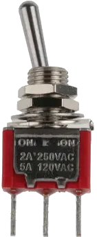
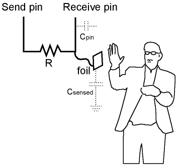

Purpose:
To implement the functionality of hardware push, toggle and capacitive touch buttons.
 
Dependancies:
CBuff.h/cpp, CString.h/cpp, debug.h/cpp
Dependancy on CBuff.h and CString.h can be removed by replacing all references to CString with Arduino String.
Dependancy on debug.h can be removed by replacing all references to debug with appropriate Serial.print(...) and Serial.println(...) function calls.
Classes:
CPushButton
Constructors:
CPushButton(const uint8_t nPin, const bool bActiveHigh, const uint16_t nMillisTimeOut)
Creates a CPushButtonObject with the specified input pin, mode and repeat time out.
nPin the input pin to use for the button.
bActiveHigh: if true then the push botton is triggered when the pin transitions from LOW to
HIGH,
otherwise it is triggered when the pin transitions from HIGH to LOW.
nMillisTimeOut: the number of milliseconds that must elapse before the button will be
triggered again when it is pyhsically held down.
Functions:
void begin()
Initialises the button by setting the pin into INPUT mode.
bool isClicked()
Returns: true if the button is depressed and the timeout has elapsed, otherwise false.
CCapacitiveButton
Constructors:
CCapacitiveButton(const uint8_t nSendPin, const uint8_t nReceivePin)
Creates a CCapacitiveButtonwith the specified send and receive pins, based on the Arduino capacitive sensor..
nSendPin: the digital pin to use as the send pin.
nReceivePin: the digital pin to use as the receive pin.
Functions:
void begin()
Initialises the button by setting the send pin into OUTPUT mode and the receive pin into INPUT mode.
bool isClicked()
Returns: true if the button is depressed and the timeout has elapsed, otherwise false.
CToggleButton
Constructors:
CToggleButton(const uint8_t nPin, const bool bActiveHigh, const uint16_t nMillisTimeOut)
Creates a CPushButtonObject with the specified input pin, mode and repeat time out.
nPin the input pin to use for the button.
bActiveHigh: if true then the push botton is triggered when the pin transitions from LOW to
HIGH,
otherwise it is triggered when the pin transitions from HIGH to LOW.
nMillisTimeOut: the number of milliseconds that must elapse before the button will be
triggered again when it is pyhsically held down.
Functions:
void begin()
Initialises the button by setting the send pin into OUTPUT mode and the receive pin into INPUT mode.
bool isClicked()
Returns: true if the button is depressed and the timeout has elapsed, otherwise false.
CAnalogTouchButton
Constructors:
CAnalogTouchButton()
Creates an empty CAnalogTouchButton object.
Functions:
void init(const uint8_t nAnalogPin, const uint16_t nSamples = 100, const uint16_t nThreshold = 492, const uint32_t nLatency = 0)
Initialises the button with the specified analog pin, sample rate, threshold and latency.
nSamples: the number of anaolog pin readings to take before averaging them all. Defaults to 100.
nThreshold : the analogue value below which the button will not register as touched. Defaults to 492.
nLatency : the number of milliseconds that need to elapse before the button registers as touched again.
int16_t getReading()
bool poll()
Returns: true if the button was touched, otherwise false.
void setThreshold(const uint16_t nThreshold)
Sets a new threshold value.
nThreshold: the new threshold value.
uint16_t getThreshold()
Returns: the current threshold value.
void setLatency(const uint16_t nLatency)
Sets a new latency value.
nLatency: the new latency value.
uint16_t getLatency()
Returns: the current latency value.
void enable()
Enables the buttom.
void disable(const uint32_t nMillisTime = 0)
bool isEnabled()
Returns: true of the button is enabled , otherwise false.
bool isDisabled()
Returns: true of the button is disabled , otherwise false.